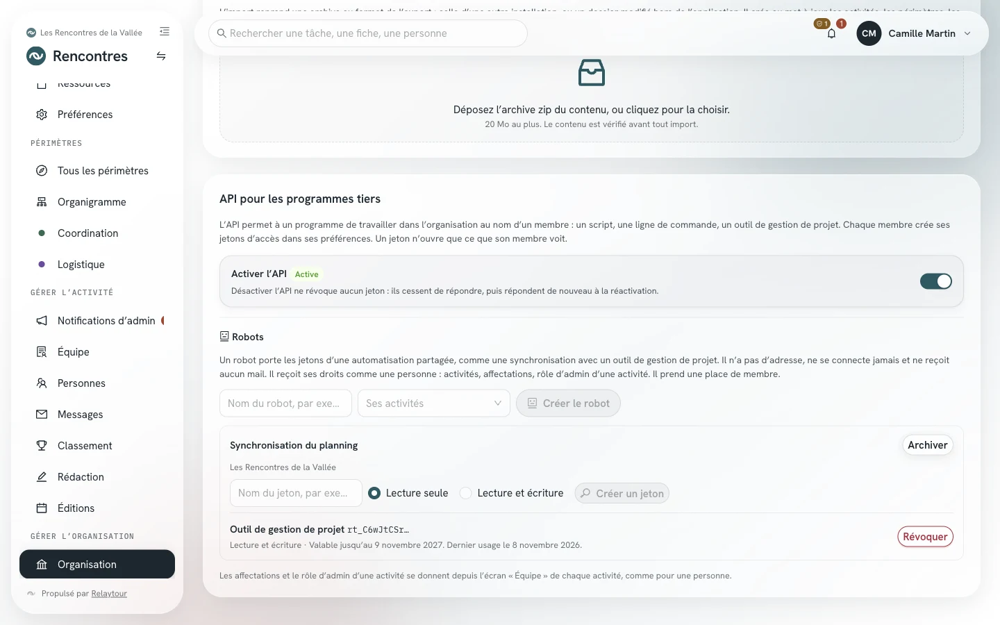
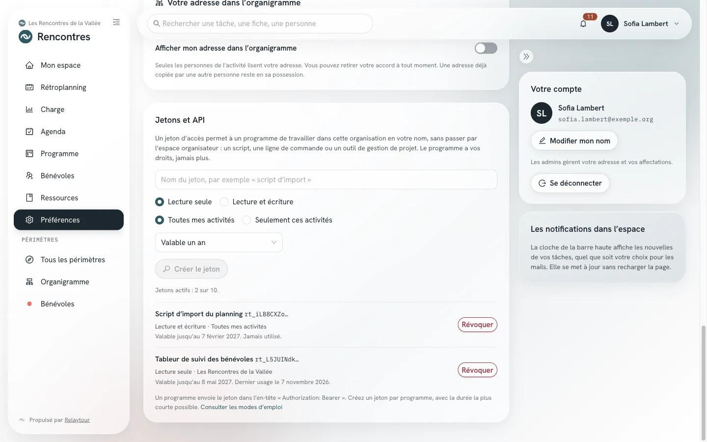

L'API permet à un programme de travailler dans votre organisation en votre nom : un script, une ligne de commande, un tableur ou un outil de gestion de projet. Le programme présente un jeton d'accès, et Relaytour lui accorde vos droits, jamais davantage.
Ce mode d'emploi s'adresse aux personnes qui écrivent ou installent un programme. Les admins de l'organisation y trouvent aussi l'activation du module et les robots.
Point de départ
Ce que fait un jeton d'accès
Un jeton d'accès appartient à une personne et à une organisation. Il commence par rt_ et s'affiche une seule fois, à sa création. Relaytour n'en garde qu'une empreinte : une personne qui perd son jeton en crée un autre.
Le programme lit et modifie ce que la personne lit et modifie dans l'espace organisateur. Le jeton peut réduire ces droits : lecture seule, ou quelques activités seulement. Il ne donne jamais accès au compte lui-même : ni aux préférences, ni aux autres jetons, ni aux exports complets.
Admins de l'organisation
Activer le module « API »
Le module « API » est inactif à la création d'une organisation. Tant qu'il reste inactif, personne ne crée de jeton et aucun jeton ne répond.
Le panneau « API pour les programmes tiers »
/<activité>/organisation
Le panneau se trouve en bas de l'écran « Organisation ». Il indique l'état du module et porte l'interrupteur des admins.
Activer l'APIOuvrir le module. Chaque membre peut alors créer ses jetons dans ses préférences.
DésactiverFermer le module. Aucun jeton n'est révoqué : les jetons cessent de répondre, puis répondent de nouveau à la réactivation.

Le panneau « API pour les programmes tiers », sur l'organisation d'exemple.
État affiché
Ce qu'il signifie
Qui le change
Inactive
Le module est fermé. Les jetons existants ne répondent pas.
Les admins de l'organisation
Active
Le module est ouvert. Les jetons répondent.
Les admins de l'organisation
Activée par votre hébergeur
L'administration de l'installation a ouvert le module. L'interrupteur est verrouillé.
L'administration de l'installation
Non proposée par votre hébergeur
L'administration de l'installation a fermé le module pour cette organisation.
L'administration de l'installation
Suspendue
L'administration de l'installation a suspendu l'API, par exemple après un usage anormal. Tous les jetons de l'organisation sont révoqués, et le panneau affiche le motif.
L'administration de l'installation
Une organisation en lecture seule garde l'API en lecture : les jetons lisent, et toute écriture est refusée.
Chaque membre
Créer un jeton
Chaque personne crée ses jetons dans ses préférences. Le menu de votre profil y mène directement par l'entrée « Jetons et API ».
Le panneau « Jetons et API »
/<activité>/preferences#jetons
Nom du jetonNommer le programme qui utilisera le jeton, par exemple « script d'import ». Ce nom vous aide à reconnaître le jeton dans la liste.
Lecture seuleLimiter le programme à la lecture. Ce choix est proposé par défaut.
Lecture et écriturePermettre au programme de créer, de modifier et de commenter des tâches, dans la limite de vos droits.
Seulement ces activitésChoisir les activités que le programme voit. Sans ce choix, le jeton couvre toutes vos activités.
DuréeChoisir la date de fin du jeton. Un jeton vaut un an au plus, et un an par défaut.
Créer le jetonAfficher le jeton. Copiez-le aussitôt dans votre programme : il ne s'affichera plus.
RévoquerMettre fin au jeton. Le programme reçoit un refus dès sa requête suivante.

Le panneau « Jetons et API », sur l'organisation d'exemple. Les jetons sont fictifs.
La liste montre les huit premiers caractères de chaque jeton, sa portée, ses activités, sa date de fin et son dernier usage. Une personne a au plus dix jetons actifs dans une organisation.
Quand une personne est archivée, ses jetons sont révoqués. Ses droits changent dans l'organisation : ceux de ses jetons changent avec eux.
Transport complet
Appeler l'API GraphQL
L'API GraphQL est celle de l'espace organisateur, à l'adresse /graphql de votre installation. Le programme envoie le jeton dans l'en-tête Authorization. L'organisation et ses droits viennent du jeton : aucun autre en-tête n'est nécessaire.
La requête jetonCourant rend les bornes du jeton : sa portée, ses activités et sa date de fin. Un programme la lit au démarrage pour savoir ce qu'il peut faire.
Le contrat du schéma est publié dans le dépôt du code source, dans le fichier packages/server/schema.graphql. Les opérations du compte restent réservées à une connexion dans l'espace organisateur : la gestion des jetons, les préférences, les abonnements et les exports complets.
Transport simple
Appeler l'API REST
L'API REST couvre les usages courants d'un outil tiers : lire ses activités, suivre et modifier des tâches, lire les fiches. Elle répond sous /api/v1 avec le même jeton, et chaque route vérifie les mêmes droits que l'API GraphQL.
Le contrat OpenAPI se lit sans jeton à l'adresse /api/v1/openapi.json. Un outil de gestion de projet ou un générateur de client l'importe tel quel.
Les périodes d'une activité, et /edition-courante pour la période en cours.
GET /activites/{activiteId}/perimetres
Les périmètres d'une activité.
GET /activites/{activiteId}/equipe
Les personnes de l'équipe, sans leurs adresses.
GET /activites/{activiteId}/taches
Les tâches d'une période, par périmètre.
GET /editions/{editionId}/mes-taches
Les tâches assignées à la personne.
GET /editions/{editionId}/priorites
Les priorités de la période.
GET /taches/{id}
Une tâche, et /commentaires pour son fil.
POST /taches
Créer une tâche dans un périmètre où la personne écrit.
PATCH /taches/{id}
Modifier le titre, la description ou l'échéance d'une tâche.
POST /taches/{id}/statut
Changer le statut d'une tâche.
POST /taches/{id}/assignation
Assigner une tâche, ou retirer une personne assignée.
POST /taches/{id}/commentaires
Commenter une tâche.
GET /activites/{activiteId}/fiches
Les fiches lisibles d'une activité, et /fiches/{slug} pour une fiche avec son contenu.
Une modification peut porter la version de la tâche lue (versionAttendue) ou son statut lu (statutAttendu). Relaytour refuse alors d'écraser un changement fait entre-temps par une autre personne, avec le statut 409.
Réponses
Lire les erreurs et les limites
L'API GraphQL rend chaque erreur avec un code dans extensions.code. L'API REST rend le même code dans un corps { "erreurs": [{ "code", "message" }] }, avec le statut HTTP ci-dessous.
Un refus du jeton lui-même (jeton invalide, module fermé, débit dépassé) rend aussi ce statut HTTP sur /graphql, avant toute exécution de la requête.
Code
Statut REST
Ce qu'il signifie
JETON_REQUIS
401
La requête ne porte aucun jeton.
JETON_INVALIDE
401
Le jeton est inconnu, révoqué ou expiré, ou sa personne est archivée. Le message est le même dans tous ces cas.
API_INACTIVE
403
Le module est inactif, interdit ou suspendu. La réponse indique la cause, et le motif d'une suspension.
PORTEE_INSUFFISANTE
403
Un jeton en lecture seule a demandé une écriture.
FORBIDDEN
403
La personne n'a pas ce droit, ou l'activité est hors des limites du jeton.
SAISIE_INVALIDE
400
Une valeur envoyée est invalide. Le message nomme le champ.
CONFLIT_VERSION
409
La tâche a changé depuis sa lecture.
LIMITE_DE_DEBIT
429
Le jeton a dépassé son débit. L'en-tête Retry-After indique l'attente en secondes.
Par jeton
Un jeton envoie au plus 120 requêtes par minute.
Par adresse
Une adresse IP qui présente 60 jetons refusés en 15 minutes est bloquée jusqu'à la fin de cette période.
Par requête
Une requête GraphQL trop profonde ou trop large est refusée avant son exécution, comme dans l'espace organisateur.
Admins de l'organisation
Confier une automatisation à un robot
Une automatisation partagée par une équipe ne doit pas dépendre du compte d'une personne : une synchronisation avec un outil de gestion de projet, ou un script commun. Un robot est un membre de l'organisation sans connexion. Il porte les jetons de cette automatisation, et ses actions apparaissent sous son nom dans le fil des tâches.
Créer un robot
Dans le panneau de l'API, sous « Robots », un admin de l'organisation nomme le robot et choisit ses activités. Une organisation a au plus cinq robots actifs, et chaque robot prend une place de membre.
Lui donner des droits
Les admins de chaque activité affectent le robot à des périmètres depuis l'écran « Équipe », comme une personne. Un robot peut être admin d'une activité, jamais admin de l'organisation.
Gérer ses jetons
L'admin crée au plus cinq jetons actifs par robot et les révoque depuis le même panneau. Archiver le robot révoque tous ses jetons et libère sa place.
Un robot n'a pas d'adresse joignable. Il ne reçoit aucun mail, aucune notification ni aucun code de connexion, et il n'apparaît ni dans le classement ni dans l'organigramme.
Bonnes pratiques
Protéger vos jetons
Un jeton par programmeCréez un jeton distinct pour chaque programme. Vous révoquez ainsi un seul programme sans interrompre les autres.
Le moins de droits possibleChoisissez la lecture seule et les seules activités utiles. Choisissez la durée la plus courte qui convient au programme.
Hors du codeGardez le jeton dans une variable d'environnement ou un coffre de secrets, jamais dans un dépôt de code ni dans un document partagé.
Révoquer au moindre douteRévoquez un jeton dès qu'il a pu être copié par une autre personne. La date du dernier usage, dans la liste, aide à repérer un usage inattendu.